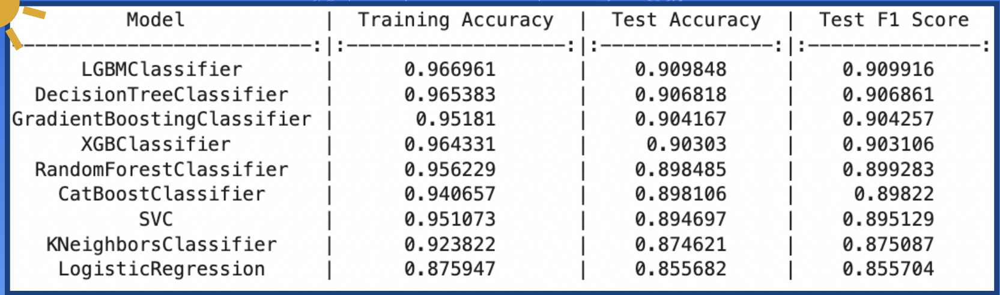
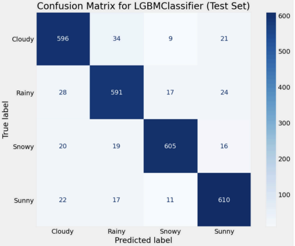
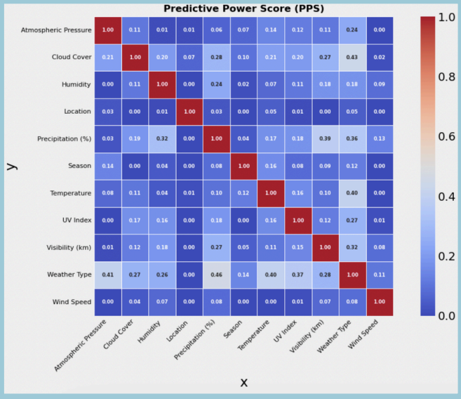

Overview
We classify weather conditions (Sunny, Cloudy, Rainy, Snowy) from meteorological features (temperature, humidity, wind speed, precipitation, pressure, etc.). We evaluated multiple models and selected LightGBM as the best performer (~91% accuracy; best F1), balancing precision and recall for reliable predictions.
- Dataset: 13,200 samples · 11 features (7 numerical, 4 categorical)
- Preprocessing: outlier handling, scaling, one-hot encoding, SMOTE
- Models: Logistic Regression, SVM, KNN, Decision Tree, Random Forest, Gradient Boosting, XGBoost, LightGBM, CatBoost
- Best Model: LightGBM (highest test accuracy & F1)
Results Gallery



Methods (Short)
- Preprocessing: IQR outlier check; StandardScaler (numeric); One-Hot Encoding (categorical); SMOTE (class balance)
- Evaluation: accuracy, precision, recall, F1; validation for tuning
- Selection: LightGBM chosen for consistent top accuracy & F1 and efficient training